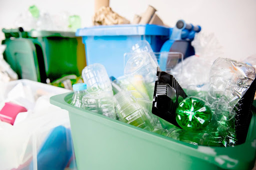
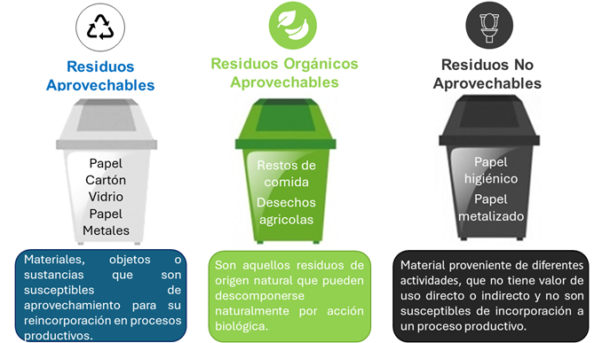

Contaminación Ambiental y Manejo de Residuos Sólidos
La Humanidad a lo largo de la historia ha generado residuos sólidos, los cuales han sido manejados de diferentes maneras, dependiendo de la época y del lugar. Sin embargo, en la actualidad, el manejo inadecuado de los residuos sólidos ha generado un problema ambiental que afecta a la salud humana y al equilibrio ecológico.

¿Qué es la contaminación causada por los residuos?
La contaminación causada por los residuos es el subproducto no intencionado del consumo y la producción insostenibles, definido como la acumulación descontrolada de residuos sólidos en el medio ambiente (tierra, agua o aire) debido a su eliminación o gestión inadecuada.
Esta forma de contaminación implica la liberación de sustancias nocivas y efectos negativos que incluyen:
Contaminación del aire: Emisión de gases de efecto invernadero como el metano desde vertederos y la quema de desechos, así como toxinas antropogénicas que causan problemas respiratorios y alteran el clima.
Contaminación del agua y suelo: Filtración de lixiviados tóxicos, metales pesados y productos químicos que contaminan fuentes de agua potable, acuíferos y ecosistemas terrestres.
En la salud humana: Exposición a patógenos y tóxicos que provocan enfermedades respiratorias, dermatológicas, cáncer, alteraciones hormonales y problemas de desarrollo en poblaciones cercanas a vertederos o zonas de disposición ilegal.
Impacto en los ecosistemas y la economía
Cuando los residuos no se gestionan de manera adecuada, también destruyen ecosistemas completos. Los animales pueden confundir plásticos con alimento, los suelos pierden fertilidad y los cuerpos de agua se vuelven impropios para la vida silvestre y para el consumo humano. Además, los costos de limpieza, salud pública y restauración ambiental suelen ser muy altos para las comunidades.
Por eso la contaminación por residuos no solo afecta el medio ambiente, sino también la economía local, la calidad de vida y la sostenibilidad de ciudades enteras. En muchas regiones, la recuperación de paisajes contaminados exige años de trabajo y grandes inversiones.
Soluciones y manejo responsable de residuos
La reducción, reutilización y reciclaje son estrategias clave para disminuir la cantidad de residuos que terminan en vertederos o en el medio ambiente. También es importante separar desechos orgánicos e inorgánicos, fomentar el compostaje y apoyar políticas públicas que promuevan la educación ambiental.
En el hogar, la comunidad y la industria, cada acción cuenta: usar menos productos de un solo uso, elegir materiales reciclables, reparar antes que desechar y apoyar modelos de economía circular. Así se reducen los impactos negativos y se construye una relación más responsable con el planeta.
